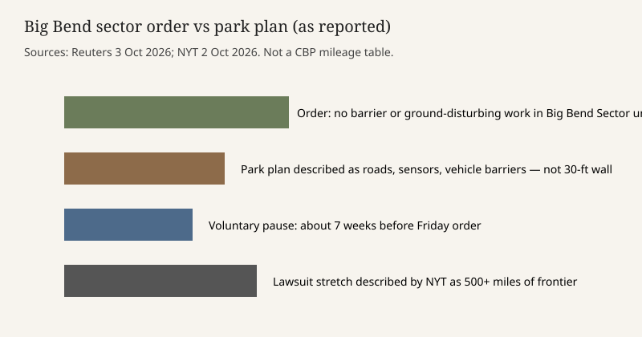

Texas · border infrastructure · 2–3 October 2026
A federal judge barred border-barrier construction in the Big Bend sector unless environmental laws are met

What is agreed across desks
On Friday, 2 October 2026, U.S. District Judge Kathleen Cardone in the Western District of Texas issued a preliminary injunction that stops the federal government from building a border barrier, related infrastructure, or other ground-disturbing works in the Big Bend sector unless it complies with environmental laws. Reuters, the Associated Press as carried by CNN, and the New York Times all report that core order. The case is an environmental lawsuit, not a criminal prosecution and not a final judgment on the merits.
Reuters says the order came nearly seven weeks after U.S. Customs and Border Protection Commissioner Rodney Scott paused construction so he could visit the area, make what he called a personal evaluation, and speak with interested parties. The injunction, in Reuters’s reading, stops Scott from simply reversing that pause. Crews had started clearing land inside Big Bend National Park in August. CBP has described the park plan as roads, surveillance technology, and vehicle barriers, rather than the 30-foot steel walls used on other stretches of the border.
The plaintiffs named by Reuters are the Center for Biological Diversity, a group called Friends of the Ruidosa Church, and a Big Bend-area river guide and landowner. Cardone found they were likely to prevail on at least some claims and would face serious, irreparable harm without an injunction. The plaintiffs argue that the administration, including Homeland Security Secretary Markwayne Mullin, improperly used a broad waiver of environmental statutes to speed the project. The New York Times reports a two-page order saying the government may not rely on those waivers until the case is resolved and “must comply with all applicable laws.”
What is only a quote
Laiken Jordahl of the Center for Biological Diversity called the ruling a “total victory” and said bulldozers would be “sent packing” until a merits ruling. That is an advocate’s description of an injunction, not a finding that the complaint has already won. A government statement carried by the Times said officials “stand by our assessment” and remain confident in legal authorities “to secure the border while preserving the unique landscape.” Confidence in an authority is not the same thing as a holding that the waiver was lawful.
The Associated Press, via CNN, places the project inside a $46 billion effort to mix 30-foot walls, vehicle barriers, roads, and surveillance along the southern border. That dollar figure is a reported program scale, not a line item in Friday’s order for Big Bend alone. The Times describes the lawsuit as aimed at barriers across a more-than-500-mile stretch. Readers should not treat 500 miles as the length of wall already built, or as the length of steel bollard planned inside the national park.
Mechanism and history a reader needs
A preliminary injunction is an interim order. The judge asks whether the plaintiffs are likely to succeed, whether harm would be irreparable, and whether the balance of equities and the public interest favor a pause. It does not decide the case. Either side can appeal. If the government later completes the environmental steps the order requires, construction can resume without a change in immigration statute.
Big Bend is an unusual border landscape. The Rio Grande cuts Santa Elena Canyon between park cliffs. For years, federal planners treated the terrain itself as a deterrent and built less barrier there than in urban crossings. Congress has, in other sectors, allowed the homeland-security secretary to waive environmental laws for barrier projects. The fight on Friday is about whether that waiver power was used lawfully here, and whether a voluntary pause can be lifted while the lawsuit is open. Senator John Cornyn, a Texas Republican, has urged consultation with local leaders and has argued that the rugged ground already deters crossings. That is a political intervention, not a vote of the court.
The park and the sector are not the same polygon. Reuters centers the order on the national park and then quotes language covering the Big Bend sector. The Times says the order reaches the sector and notes that federal lawyers had told the court, days earlier, that work would resume in several Big Bend areas outside the park after the voluntary pause. A reader who wants the exact geographic scope should read the order, which neither wire has reproduced in full in the pieces scored here.
What this story is not
It is not a count of people who crossed the border this week. It is not a finding that any named official committed a crime. It is not evidence that a 30-foot wall was already standing in Santa Elena Canyon. The Commons photograph is a 2006 public-domain view of the canyon, chosen because event photographs of excavators are on news-agency CDNs that this dossier does not use as the only image source.

Source articles and scores
| Outlet | Headline | T | N | C |
|---|---|---|---|---|
| Reuters | Judge bars building of Texas-Mexico border barrier in Big Bend National Park | 95 | 0 | 98 |
| Associated Press (via CNN) | Federal court temporarily blocks Trump administration border wall in Texas’ Big Bend region | 93 | -4 | 90 |
| New York Times | Judge Blocks Border Wall Construction in Big Bend in Texas | 92 | -6 | 88 |